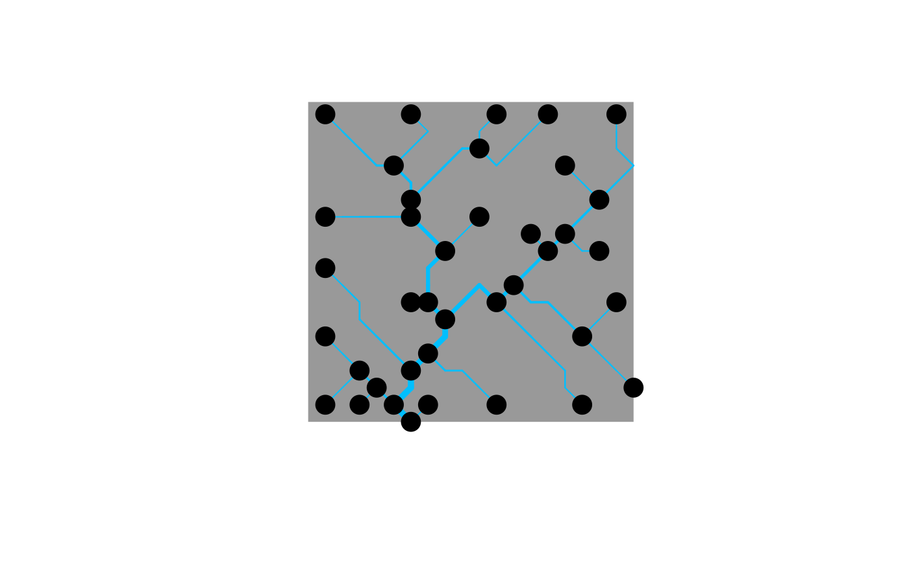
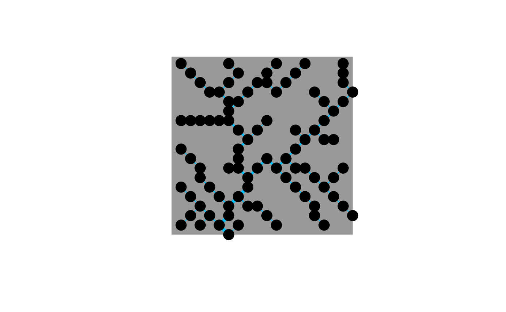
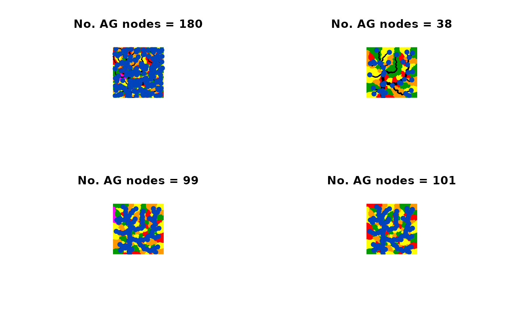

Aggregate an Optimal Channel Network
aggregate_OCN.RdFunction that, given an OCN, builds the network at the river network (RN), aggregated (AG), subcatchment (SC), and catchment (CM) levels.
Usage
aggregate_OCN(OCN, thrA = 0.002 * OCN$FD$nNodes *
OCN$cellsize^2, streamOrderType = "Strahler", maxReachLength = Inf,
breakpoints = NULL, displayUpdates = FALSE)Arguments
- OCN
A
riverobject as produced bylandscape_OCN.- thrA
Threshold value on drainage area used to derive the aggregated network. If
thrA = 0, no aggregation is performed: every FD node is also a node at the RN and AG levels. In this case, the functionaggregate_OCNcan still be used to compute statistics such asOCN$AG$streamOrder.- streamOrderType
If
"Strahler", Strahler stream order is computed; if"Shreve", Shreve stream order is computed.- maxReachLength
Maximum reach length allowed (in planar units). If the path length between a channel head and the downstream confluence is higher than
maxReachLength, the reach starting from the channel head will have a length up tomaxReachLength, while the next downstream pixel is considered as a new channel head, from which a new reach departs. Values lower thanOCN$cellsize*sqrt(2)are not allowed. IfmaxReachLength < 2*OCN$cellsize, every RN node is also an AG node.- breakpoints
Indices of additional nodes at the RN level that should be also nodes at the AG level (beyond source, confluence, outlet nodes and AG nodes determined via
maxReachLength). To determine such indices, a preliminary run ofaggregate_OCNwith the samethrAwould be required (see example 3).- displayUpdates
Logical. State if updates are printed on the console while
aggregate_OCNruns.
Value
A river object that contains all objects contained in OCN, in addition to the objects listed below.
New sublists RN, AG, SC, containing variables at the corresponding aggregation levels, are created.
Refer to section 4.2 of the vignette for a more detailed explanation on values OCN$XX$toYY, where XX and YY are two random aggregation levels.
FD$toRNVector (of length
OCN$FD$nNodes) whose values are equal to 0 if the FD node is not a node at the RN level. IfFD$toRN[i] != 0, thenFD$toRN[i]is the index at the RN level of the node whose index at the FD level isi. Thereby,FD$toRN[i] = jimpliesRN$toFD[j] = i.FD$toSCVector (of length
OCN$FD$nNodes) of SC indices for all nodes at the FD level. IfOCN$FD$toSC[i] = j, theni %in% OCN$SC$toFD[[j]] = TRUE.RN$AVector (of length
RN$nNodes) containing drainage area values for all RN nodes (in square planar units).RN$WAdjacency matrix (
RN$nNodesbyRN$nNodes) at the RN level. It is aspamobject.RN$downNodeVector (of length
RN$nNodes) representing the adjacency matrix at RN level in a vector form: ifRN$downNode[i] = jthenRN$W[i,j] = 1. Ifois the outlet node, thenRN$downNode[o] = 0.RN$drainageDensityDrainage density of the river network, calculated as total length of the river network divided by area of the lattice. It is expressed in planar units^(-1).
RN$lengVector (of length
RN$nNodes) of lengths of edges departing from nodes at the RN level. Its values are equal to either0(if the corresponding node is an outlet),OCN$cellsize(if the corresponding flow direction is horizontal/vertical), orsqrt(2)*OCN$cellsize(diagonal flow).RN$nNodesNumber of nodes at the RN level.
RN$nUpstreamVector (of length
RN$nNodes) providing the number of nodes upstream of each node (the node itself is included).RN$outletVector (of length
OCN$FD$nOutlet) indices of nodes at RN level corresponding to outlets.RN$SlopeVector (of length
RN$nNodes) of pixel slopes at RN level.RN$toAGVector (of length
RN$nNodes) whose values are equal to 0 if the RN node is not a node at the AG level. IfRN$toAG[i] != 0, thenRN$toAG[i]is the index at the AG level of the node whose index at the RN level isi. Thereby,RN$toAG[i] = jimpliesAG$toRN[j] = i.RN$toAGReachVector (of length
RN$nNodes) identifying to which edge (reach) the RN nodes belong. IfRN$toAGReach[i] = j, the RN nodeibelongs to the edge departing from from the AG nodej(which implies that it may correspond to the AG nodejitself.)RN$toFDVector (of length
RN$nNodes) with indices at FD level of nodes belonging to RN level.RN$toFD[i] = jimpliesOCN$FD$toRN[j] = i.RN$toCMVector (of length
RN$nNodes) with catchment index values for each RN node. Example:RN$toCM[i] = jif nodeidrains into the outlet whose location is defined byoutletSide[j],outletPos[j].RN$upstreamList (of length
RN$nNodes) whose objectiis a vector (of lengthRN$nUpstream[i]) containing the indices of nodes upstream of a nodei(includingi).RN$X,RN$YVectors (of length
RN$nNodes) of X, Y coordinates of nodes at RN level.RN$ZVector (of length
RN$nNodes) of Z coordinates of nodes at RN level.AG$AVector (of length
AG$nNodes) containing drainage area values for all nodes at AG level. Ifiis a channel head, thenAG$A[RN$toAG[i]] = RN$A[i].AG$AReachVector (of length
AG$nNodes) containing drainage area values computed by accounting for the areas drained by edges departing from AG nodes. In other words,AG$AReach[i]is equal to the drainage area of the last downstream node belonging to the reach that departs fromi(namelyAG$AReach[i] = max(RN$A[RN$toAG == i])).AG$WAdjacency matrix (
AG$nNodesbyAG$nNodes) at the AG level. It is aspamobject.AG$downNodeVector (of length
AG$nNodes) representing the adjacency matrix at AG level in a vector form: ifAG$downNode[i] = jthenAG$W[i,j] = 1. Ifois the outlet node, thenAG$downNode[o] = 0.AG$lengVector (of length
AG$nNodes) of lengths of edges departing from nodes at AG level. Note thatAG$leng[i] = sum(RN$leng[RN$toAG == i]). Ifois an outlet node (i.e. (o %in% AG$outlet) = TRUE), thenAG$leng[i] = 0.AG$nNodesNumber of nodes resulting from the aggregation process.
AG$nUpstreamVector (of length
AG$nNodes) providing the number of nodes (at the AG level) upstream of each node (the node itself is included).AG$outletVector (of length
OCN$FD$nOutlet) with indices of outlet nodes, i.e. nodes whoseAG$downNodevalue is 0.AG$slopeVector (of length
AG$nNodes) of slopes at AG level. It represents the (weighted) average slope of edges departing from nodes. Ifiis an outlet node (i.e. (i %in% AG$outlet) = TRUE), thenAG$slope[i] = NaN.AG$streamOrderVector (of length
AG$nNodes) of stream order values for each node. IfstreamOrderType = "Strahler", Strahler stream order is computed. IfstreamOrderType = "Shreve", Shreve stream order is computed.AG$upstreamList (of length
AG$nNodes) whose objectiis a vector (of lengthAG$nUpstream[i]) containing the indices of nodes (at the AG level) upstream of a nodei(includingi).AG$toFDVector of length
AG$nNodes) with with indices at FD level of nodes belonging to AG level.AG$toFD[i] = jimpliesOCN$FD$toAG[j] = i.AG$ReachToFDList (of length
AG$nNodes) whose objectiis a vector of indices of FD nodes constituting the edge departing from nodei.AG$toRNVector of length
AG$nNodes) with with indices at RN level of nodes belonging to AG level.AG$toRN[i] = jimpliesOCN$FD$toRN[j] = i.AG$ReachToRNList (of length
AG$nNodes) whose objectiis a vector of indices of RN nodes constituting the edge departing from nodei.AG$toCMVector (of length
AG$nNodes) with catchment index values for each AG node. Example:AG$toCM[i] = jif nodeidrains into the outlet whose location is defined byoutletSide[j],outletPos[j].AG$X,AG$YVectors (of length
AG$nNodes) of X, Y coordinates (in planar units) of nodes at the AG level. These correspond to the X, Y coordinates of the nodes constituting the upstream tips of the reaches. Ifiandjare such thatAG$X[i] == RN$X[j]andAG$Y[i] == RN$Y[j], thenAG$A[i] = RN$A[j].AG$XReach,AG$YReachVector (of length
AG$nNodes) of X, Y coordinates (in planar units) of the downstream tips of the reaches. Ifiandjare such thatAG$XReach[i] == RN$X[j]andAG$YReach[i] == RN$Y[j], thenAG$AReach[i] = RN$A[j]. Ifois an outlet node, thenAG$XReach = NaN,AG$YReach = NaN.AG$ZVector (of length
AG$nNodes) of elevation values (in elevational units) of nodes at the AG level. These correspond to the elevations of the nodes constituting the upstream tips of the reaches.AG$ZReachVector (of length
AG$nNodes) of Z coordinates (in elevational units) of the downstream tips of the reaches. Ifois an outlet node, thenAG$ZReach = NaN.SC$ALocalVector (of length
SC$nNodes) with values of subcatchment area, that is the number of FD pixels (multiplied byOCN$FD$cellsize^2) that constitutes a subcatchment. Ifois an outlet node, thenALocal[o] = 0.SC$WAdjacency matrix (
SC$nNodesbySC$nNodes) at the subcatchment level. Two subcatchments are connected if they share a border. Note that this is not a flow connection. Unlike the adjacency matrices at levels FD, RN, AG, this matrix is symmetric. It is aspamobject. Ifois an outlet node, thenSC$W[o,]andSC$W[,o]only contain zeros (i.e.,ois unconnected to the other nodes).SC$nNodesNumber of subcatchments into which the lattice is partitioned. If
nOutlet = 1, thenSC$nNodes = AG$nNodes. If multiple outlets are present,SC$nNodesmight be greater thanAG$nNodesin the case when some catchments have drainage area lower thanthrA. In this case, the indices fromAG$nNodes + 1toSC$nNodesidentify subcatchment that do not have a corresponding AG node.SC$toFDList (of length
SC$nNodes) whose objectiis a vector of indices of FD pixels constituting the subcatchmenti.SC$X,SC$YVectors (of length
SC$nNodes) of X, Y coordinates (in planar units) of subcatchment centroids.SC$ZVector (of length
SC$nNodes) of average subcatchment elevation (in elevational units).
Finally, thrA is added to the river object.
Details
Note that each node (and the corresponding edge exiting from it, in the case of non-outlet nodes) at the AG level corresponds to
a subcatchment at the SC level that shares the same index: for instance, SC$toFD[i] contains all elements of
AG$toFD[i] (that is, the indices of pixels at FD level that constitute the edge departing from node i
are also part of subcatchment i).
Examples
# 1a) aggregate a 20x20 OCN by imposing thrA = 4.
OCN <- aggregate_OCN(landscape_OCN(OCN_20), thrA = 4)
draw_thematic_OCN(OCN, drawNodes = TRUE)
# \donttest{
# 1b) same as above, but identify all RN nodes as AG nodes
mrl <- 1.5*OCN_20$cellsize
OCN2 <- aggregate_OCN(landscape_OCN(OCN_20), thrA = 4, maxReachLength = mrl)
draw_thematic_OCN(OCN2, drawNodes = TRUE)

# }
# \donttest{
# 2) explore the effects of thrA and maxReachLength on a large OCN
OCN <- landscape_OCN(OCN_250_T) # it takes some seconds
OCN_a <- aggregate_OCN(OCN, thrA = 200) # it takes some seconds
OCN_b <- aggregate_OCN(OCN, thrA = 1000) # it takes some seconds
OCN_c <- aggregate_OCN(OCN, thrA = 1000, maxReachLength = 20) # it takes some seconds
old.par <- par(no.readonly = TRUE)
par(mfrow = c(1,3))
draw_subcatchments_OCN(OCN_a)
points(OCN_a$AG$X, OCN_a$AG$Y, pch = 19, col = "#0044bb")
title(paste("No. AG nodes = ", as.character(OCN_a$AG$nNodes),
sep=""))
draw_subcatchments_OCN(OCN_b)
points(OCN_b$AG$X, OCN_b$AG$Y, pch = 19, col = "#0044bb")
title(paste("No. AG nodes = ", as.character(OCN_b$AG$nNodes),
sep=""))
draw_subcatchments_OCN(OCN_c)
points(OCN_c$AG$X, OCN_c$AG$Y, pch = 19, col = "#0044bb")
title(paste("No. AG nodes = ", as.character(OCN_c$AG$nNodes),
sep=""))

par(old.par)
# }
# 3) use of breakpoints
OCN <- aggregate_OCN(landscape_OCN(OCN_20), thrA = 5)
draw_thematic_OCN(OCN, drawNodes=TRUE)

# add an AG node downstream of node 1 at AG level
new_node_RN <- OCN$RN$downNode[OCN$AG$toRN[1]]
OCN2 <- aggregate_OCN(landscape_OCN(OCN_20), thrA = 5, breakpoints = new_node_RN)
draw_thematic_OCN(OCN2, drawNodes = TRUE)
points(OCN$RN$X[new_node_RN], OCN$RN$Y[new_node_RN],
pch = 19, col = "red") # this node has been added